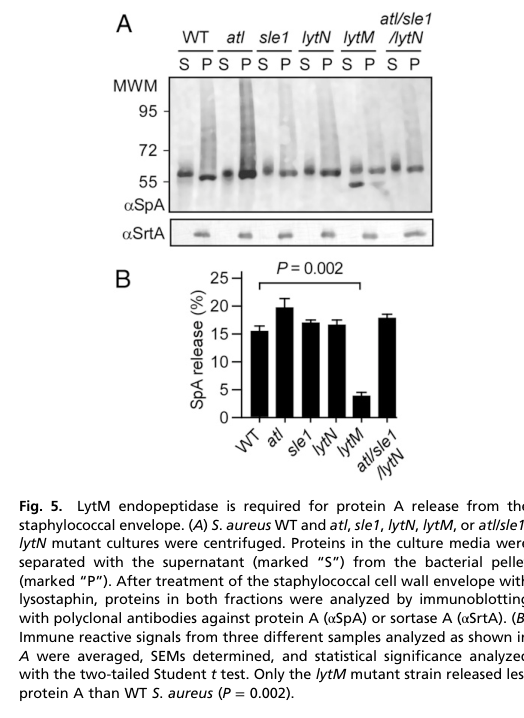

LytN is a secreted peptidoglycan (murein) hydrolase of Staphylococcus aureus that acts in the cross-wall (septal) compartment during cell division and envelope assembly. Its precursor carries a YSIRK-G/S signal peptide that directs secretion to the mid-cell cross-wall; it also has a LysM peptidoglycan-binding module and a catalytic CHAP (cysteine, histidine-dependent amidohydrolase/peptidase) domain. The CHAP domain is bifunctional, acting as both an N-acetylmuramoyl-L-alanine amidase (cleaving the MurNAc-L-Ala amide bond linking the glycan strand to the stem peptide) and a D-alanyl-glycine endopeptidase (cleaving the D-Ala-Gly peptide bond); catalysis depends on the conserved CHAP residues Cys266 and His329. By hydrolyzing septal peptidoglycan, LytN promotes cross-wall splitting and the completion of daughter-cell separation. Its activity is spatially controlled (wall teichoic acid mediates its septal localization) and dosage-controlled: loss of LytN damages the cross-wall and impairs growth, while overexpression triggers cross-wall rupture and lysis. LytN also contributes to remodeling the peptidoglycan anchor of surface proteins such as protein A, removing amino sugars from the attached peptidoglycan, although it is not the determinant of overall protein A release.
| GO Term | Evidence | Action | Reason |
|---|---|---|---|
|
GO:0005576
extracellular region
|
IEA
GO_REF:0000044 |
MARK AS OVER ANNOTATED |
Summary: LytN is a secreted protein (UniProt SubCell "Secreted"), so the broad extracellular-region term is not incorrect. However, LytN does not act freely in the extracellular space; it is delivered via a YSIRK-G/S signal peptide to the cross-wall (division septum) where it carries out septal peptidoglycan hydrolysis, and its function depends on this localization.
Reason: The SubCell-derived "extracellular region" is technically defensible but uninformative and partly misleading for a cross-wall enzyme. Frankel et al. showed externally added purified LytN does not complement a lytN mutant, whereas bacterially produced precursor does, demonstrating that physiological function requires cross-wall targeting rather than bulk extracellular activity (PMID:21784864). A cell septum / cell wall cellular-component term is more accurate (see NEW annotations); retaining this term as non-core/over-annotated is acceptable since the protein is genuinely secreted.
Supporting Evidence:
PMID:21784864
Secreted polypeptides endowed with a YSIRK-G/S signal peptide are directly delivered to the cross-wall compartment. One such YSIRK-containing protein is the murein hydrolase LytN.
PMID:21784864
The lytN phenotype can be reversed by the controlled expression of lytN but not by adding purified LytN to staphylococcal cultures.
|
|
GO:0008932
lytic endotransglycosylase activity
|
IEA
GO_REF:0000118 |
REMOVE |
Summary: This TreeGrafter/PANTHER annotation (from subfamily PTHR33734:SF22, "membrane-bound lytic murein transglycosylase D") is mechanistically incorrect for LytN. Lytic transglycosylases cleave the glycosidic MurNAc-GlcNAc bond non-hydrolytically, forming a 1,6-anhydro-MurNAc product (GO:0008932 definition). LytN has no transglycosylase domain; its catalytic module is a CHAP domain that HYDROLYZES amide and peptide bonds, acting as an N-acetylmuramoyl-L-alanine amidase and a D-alanyl-glycine endopeptidase.
Reason: The annotation arises from an over-propagated subfamily misassignment. PANTHER places LytN in PTHR33734:SF22 (a lytic transglycosylase subfamily), but LytN's experimentally characterized activities are hydrolytic amide/peptide cleavages, not the 1,6-anhydro-forming glycosidic cleavage that defines lytic endotransglycosylase activity (GO:0008932, verified via QuickGO). LytN's domain architecture (CHAP + LysM, no transglycosylase fold) and the direct product evidence (MurNAc-L-Ala and D-Ala-Gly bond cleavage, abolished by Cys266/His329 mutation) contradict transglycosylase activity (PMID:21784864). This electronic inference should be removed and replaced by the verified amidase and endopeptidase MF terms (see NEW annotations).
Supporting Evidence:
PMID:21784864
LytN harbors LysM and CHAP domains, the latter of which functions as both an N-acetylmuramoyl-L-alanine amidase and D-alanyl-glycine endopeptidase.
|
|
GO:0016787
hydrolase activity
|
IEA
GO_REF:0000104 |
MODIFY |
Summary: LytN is indeed a hydrolase (a peptidoglycan hydrolase / murein hydrolase), so this term is correct but uninformatively general. The specific activities are an N-acetylmuramoyl-L-alanine amidase and a peptidoglycan (D-alanyl-glycine) endopeptidase, both well supported experimentally.
Reason: GO:0016787 is a root-level hydrolase term that conveys little about LytN's function. It should be replaced by the specific catalytic activities demonstrated by Frankel et al. (PMID:21784864), namely N-acetylmuramoyl-L-alanine amidase activity (GO:0008745) and peptidoglycan endopeptidase activity (GO:0061785). Both replacement terms were verified via QuickGO.
Proposed replacements:
N-acetylmuramoyl-L-alanine amidase activity
peptidoglycan endopeptidase activity
Supporting Evidence:
PMID:21784864
LytN harbors LysM and CHAP domains, the latter of which functions as both an N-acetylmuramoyl-L-alanine amidase and D-alanyl-glycine endopeptidase.
|
|
GO:0008745
N-acetylmuramoyl-L-alanine amidase activity
|
IDA
PMID:21784864 LytN, a murein hydrolase in the cross-wall compartment of St... |
NEW |
Summary: The CHAP domain of LytN cleaves the MurNAc-L-Ala amide bond, an N-acetylmuramoyl-L-alanine amidase activity demonstrated biochemically by muropeptide product analysis (MS) and Edman degradation, and abolished by the CHAP active-site mutations C266A and H329A.
Reason: Direct experimental evidence supports this specific molecular function (PMID:21784864), the verified, informative replacement for the generic hydrolase term. GO:0008745 verified via QuickGO ("hydrolysis of the link between N-acetylmuramoyl residues and L-amino acid residues in bacterial cell-wall glycopeptides").
Supporting Evidence:
PMID:21784864
LytN harbors LysM and CHAP domains, the latter of which functions as both an N-acetylmuramoyl-L-alanine amidase and D-alanyl-glycine endopeptidase.
|
|
GO:0061785
peptidoglycan endopeptidase activity
|
IDA
PMID:21784864 LytN, a murein hydrolase in the cross-wall compartment of St... |
NEW |
Summary: LytN's CHAP domain also acts as a D-alanyl-glycine endopeptidase, cleaving the D-Ala-Gly peptide bond within the staphylococcal peptidoglycan stem/cross-bridge; this is a peptidoglycan endopeptidase activity.
Reason: Direct biochemical evidence (product analysis and active-site mutagenesis) supports a peptidoglycan endopeptidase activity (D-Ala-Gly cleavage) for LytN (PMID:21784864), corroborated as a recognized D-Ala-Gly hydrolase (PMID:39495121). GO:0061785 verified via QuickGO ("an endopeptidase activity that uses peptidoglycan as a substrate").
Supporting Evidence:
PMID:21784864
LytN harbors LysM and CHAP domains, the latter of which functions as both an N-acetylmuramoyl-L-alanine amidase and D-alanyl-glycine endopeptidase.
PMID:39495121
The only other recognised D-Ala-Gly hydrolase in S. aureus is LytN.
|
|
GO:0009253
peptidoglycan catabolic process
|
IDA
PMID:21784864 LytN, a murein hydrolase in the cross-wall compartment of St... |
NEW |
Summary: By hydrolyzing amide and peptide bonds in mature peptidoglycan, LytN participates in the breakdown/remodeling of the murein sacculus.
Reason: LytN is a murein hydrolase that cleaves bonds in mature peptidoglycan (PMID:21784864); peptidoglycan catabolic process (GO:0009253, verified via QuickGO) captures this biological process. This is the BP counterpart of the hydrolytic MF terms.
Supporting Evidence:
PMID:21784864
One such YSIRK-containing protein is the murein hydrolase LytN.
|
|
GO:0000920
septum digestion after cytokinesis
|
IMP
PMID:21784864 LytN, a murein hydrolase in the cross-wall compartment of St... |
NEW |
Summary: LytN promotes cross-wall (septal peptidoglycan) splitting and the completion of daughter-cell separation; lytN mutants show structural damage to the cross-wall and impaired growth, consistent with a role in septal cell wall digestion that enables daughter-cell separation.
Reason: Frankel et al. demonstrate that LytN secretion into the cross-wall promotes peptidoglycan separation and completion of the cell cycle, and that its loss damages the cross-wall (PMID:21784864). GO:0000920 "septum digestion after cytokinesis" (verified via QuickGO) captures the enzymatic breakdown of septal cell wall enabling daughter-cell separation.
Supporting Evidence:
PMID:21784864
LytN secretion into the cross-wall promotes peptidoglycan separation and completion of the staphylococcal cell cycle.
PMID:21784864
lytN mutations precipitate structural damage to the cross-wall and interfere with staphylococcal growth.
|
|
GO:0071555
cell wall organization
|
IMP
PMID:21784864 LytN, a murein hydrolase in the cross-wall compartment of St... |
NEW |
Summary: LytN contributes to staphylococcal envelope assembly and cross-wall remodeling; its loss impairs proper growth and envelope assembly. This term is also asserted as a UniProt keyword-derived annotation in the UniProt entry.
Reason: LytN remodels cell-wall peptidoglycan during division and envelope assembly (PMID:21784864); cell wall organization (GO:0071555, verified via QuickGO; also present as IEA UniProtKB-KW in the UniProt record) is an appropriate, well-supported biological process term.
Supporting Evidence:
PMID:21784864
is involved in proper bacterial growth and envelope assembly
|
|
GO:0030428
cell septum
|
IDA
PMID:21784864 LytN, a murein hydrolase in the cross-wall compartment of St... |
NEW |
Summary: LytN is delivered to and acts in the cross-wall / division septum compartment at mid-cell, the location where septal peptidoglycan remodeling occurs.
Reason: The YSIRK-G/S signal peptide targets LytN to the cross-wall (septal) compartment, where it functions; this is a more accurate cellular-component term than the broad extracellular region (PMID:21784864; WTA-mediated septal localization in PMID:35675307). GO:0030428 "cell septum" verified via QuickGO.
Supporting Evidence:
PMID:21784864
Secreted polypeptides endowed with a YSIRK-G/S signal peptide are directly delivered to the cross-wall compartment.
PMID:35675307
WTA also mediates the specific binding of Sle1 and LytN to the cross-wall of the septum
|
Q: Are the amidase (MurNAc-L-Ala) and endopeptidase (D-Ala-Gly) activities of LytN both required in vivo for cross-wall splitting, or does one dominate the physiological function?
Q: How is LytN activity restricted to the cross-wall and prevented from digesting peripheral wall, given that overexpression causes lethal lysis? What are the relative contributions of the YSIRK-G/S signal peptide, the LysM domain, and wall teichoic acid to this spatial control?
Q: How does LytN functionally overlap or coordinate with the other S. aureus cross-wall hydrolases (Atl, Sle1, LytM) during daughter-cell separation and surface-protein anchor remodeling?
Experiment: Separation-of-function mutagenesis of the CHAP domain to uncouple the amidase and endopeptidase activities, followed by complementation of a lytN mutant, to determine which activity drives cross-wall splitting in vivo.
Experiment: Quantitative super-resolution or fluorescence imaging of tagged LytN in wild-type versus WTA-deficient (e.g. tarO) backgrounds to test the requirement of wall teichoic acid for septal localization and to time LytN recruitment relative to division.
Experiment: Defined in vitro digestion of purified staphylococcal peptidoglycan (and isolated muropeptides) with recombinant LytN and Cys266/His329 variants, with LC-MS muropeptide profiling, to map bond preferences and the dependence of amidase activity on glycan context.
The research report should be a detailed narrative explaining the function, biological processes, and localization of the gene product. Citations should be given for all claims.
You should prioritize authoritative reviews and primary scientific literature when conducting research. You can supplement
this with annotations you find in gene/protein databases, but these can be outdated or inaccurate.
We are specifically interested in the primary function of the gene - for enzymes, what reaction is catalyzed, and what is the substrate specificity? For transporters, what is the substrate? For structural proteins or adapters, what is the broader structural role? For signaling molecules, what is the role in the pathway.
We are interested in where in or outside the cell the gene product carries out its function.
We are also interested in the signaling or biochemical pathways in which the gene functions. We are less interested in broad pleiotropic effects, except where these elucidate the precise role.
Include evidence where possible. We are interested in both experimental evidence as well as inference from structure, evolution, or bioinformatic analysis. Precise studies should be prioritized over high-throughput, where available.
The evidence retrieved pertains to Staphylococcus aureus “LytN”, described as a secreted, cross-wall (septal) peptidoglycan hydrolase with a YSIRK/GS signal peptide, a LysM peptidoglycan-binding module, and a CHAP catalytic domain with cysteine/histidine-dependent activity. This matches the provided UniProt identity (A0A0H2XJK7; USA300; domains: YSIRK signal, LysM, CHAP). (frankel2011lytnamurein pages 1-2)
LytN is an endogenous S. aureus peptidoglycan hydrolase (“murein hydrolase”) that localizes to the cross-wall compartment to remodel septal peptidoglycan during cell division and envelope assembly. (frankel2011lytnamurein pages 1-2)
Frankel et al. (2011; Journal of Biological Chemistry; publication date Sep 2011; https://doi.org/10.1074/jbc.M111.258863) provide direct product-level evidence that recombinant LytN cleaves two amide bonds in S. aureus peptidoglycan: (i) MurNAc–L-Ala (N-acetylmuramoyl-L-alanine amidase activity), and (ii) D-Ala–Gly (D-alanyl–glycine endopeptidase activity). (frankel2011lytnamurein pages 8-11, frankel2011lytnamurein pages 11-12)
Mechanistically, activity depends on conserved CHAP residues: mutation of Cys266 or His329 abolishes detectable murein hydrolase activity in the assays reported. (frankel2011lytnamurein pages 11-12, frankel2011lytnamurein pages 12-13)
LytN is described as a murein hydrolase of the cross-wall compartment (septal region) and its precursor is secreted into this compartment via its YSIRK/GS signal peptide. (frankel2011lytnamurein pages 1-2, frankel2011lytnamurein pages 11-12)
A key functional insight is that correct spatial delivery matters: lytN mutant phenotypes were complemented by controlled expression of the LytN precursor (i.e., produced by the bacterium), but not by adding purified enzyme externally, supporting a model where cross-wall targeting is required for physiological function. (frankel2011lytnamurein pages 1-2, frankel2011lytnamurein pages 11-12)
LytN contributes to cross-wall splitting / daughter cell separation, and disruption causes cross-wall structural defects and growth impairment; conversely, overexpression causes cross-wall rupture and lysis, indicating LytN activity must be tightly controlled to avoid lethal self-digestion. (frankel2011lytnamurein pages 11-12, becker2014releaseofprotein pages 3-4)
An authoritative review of S. aureus peptidoglycan hydrolases (Wang et al., 2022; FEMS Microbiology Reviews; publication date Jun 2022; https://doi.org/10.1093/femsre/fuac025) summarizes that WTA mediates specific binding/localization of LytN to the cross-wall and that WTA absence causes disordered localization. (wang2022staphylococcusaureuscell pages 10-11, wang2022staphylococcusaureuscell pages 8-10)
The same 2022 review synthesizes reported transcriptional control: lytN is repressed through the ArlRS–MgrA regulatory cascade and also through regulators such as Rot, SpoVG, and Rat, reflecting the general need to regulate autolysin activity. (wang2022staphylococcusaureuscell pages 10-11, wang2022staphylococcusaureuscell pages 8-10)
Frankel et al. (2011) report defined muropeptide products after LytN digestion, with diagnostic ions including m/z 724.68, 796.69, 2367.12, 2440.69 and others, and use Edman degradation to show liberated peptide N-termini consistent with MurNAc–L-Ala and D-Ala–Gly cleavage. Reported Edman amounts include (example) cycle-1 Ala 7.87 pmol and Gly 6.85 pmol for one fragment, whereas a larger fragment yielded five cycles of Gly without Ala, supporting the assignment of distinct cleavage events. (frankel2011lytnamurein pages 8-11, frankel2011lytnamurein pages 11-12)
Becker et al. (2014; PNAS; publication date Jan 2014; https://doi.org/10.1073/pnas.1317181111) connect LytN to processing of sortase-anchored surface proteins, specifically protein A (SpA). They report that LytN is secreted into the cross-wall via a YSIRK-G/S signal peptide and that its CHAP domain cleaves peptidoglycan via amidase/endopeptidase activities, influencing cell separation. (becker2014releaseofprotein pages 3-4)
Importantly, although LytN affects the structure of peptidoglycan-linked anchors in SpA, deletion of lytN does not substantially change the overall fraction of SpA released into culture medium: WT 15.10% ± 1.28 vs lytN mutant 16.69% ± 1.44 (bar graph shown in their Figure 5B). (becker2014releaseofprotein pages 3-4, becker2014releaseofprotein media 5e522988)
Antenucci et al. (2024; eLife; publication date Aug 2024; https://doi.org/10.1101/2023.10.13.562287) re-assess substrate specificities among major S. aureus peptidoglycan hydrolases. In this context, they explicitly describe LytN as “the only other recognised D-Ala–Gly hydrolase in S. aureus” and reiterate the dual activity of LytN’s CHAP domain: cleavage of D-Ala–Gly and MurNAc–L-Ala bonds (citing the 2011 primary work). (antenucci2024reassessingthesubstrate pages 15-18)
This 2024 perspective is relevant because it reframes S. aureus endopeptidase chemistry: it emphasizes that D-Ala–Gly cleavage is not unique to LytN (in the sense that LytM can also show D-Ala–Gly-related activity), but LytN remains a canonical CHAP-based dual-activity enzyme for septal remodeling. (antenucci2024reassessingthesubstrate pages 15-18)
A 2024 review on cell-wall targeting proteinaceous agents (Zhydzetski et al., 2024; Molecules; publication date Aug 2024; https://doi.org/10.3390/molecules29174065) highlights CHAP as a frequent catalytic motif and LysM as a common cell wall binding motif in bacteriophage lysins and related agents, and notes that disruption of LytN causes growth/morphology defects while overexpression causes lysis and death—consistent with essentiality of regulation and potential vulnerability of cell-wall remodeling systems. (zhydzetski2024agentstargetingthe pages 15-16, zhydzetski2024agentstargetingthe pages 14-15)
Although there is no direct evidence in the retrieved sources that LytN itself is deployed as a therapeutic, recent reviews emphasize the broader translational concept: cell-wall hydrolases (including CHAP-domain enzymes) can be engineered as antimicrobials (“enzybiotics”), via truncation to active catalytic domains and/or fusion with binding modules for potency and specificity. (zhydzetski2024agentstargetingthe pages 26-28, zhydzetski2024agentstargetingthe pages 21-22)
The 2024 Molecules review also notes that externally applied peptidoglycan hydrolases target conserved bonds in peptidoglycan, a mechanism distinct from classical antibiotics and potentially less prone to resistance development; it further describes domain-engineering strategies that can increase activity dramatically (e.g., CBD fusion approaches in related systems). (zhydzetski2024agentstargetingthe pages 15-16)
The key real-world relevance of LytN is as a cell division/envelope assembly factor and a potential vulnerability in pathways that govern cross-wall remodeling. Its tight regulation and lethal overexpression phenotype underscore why hydrolases are considered both (i) targets and (ii) components for engineered antibacterials. (frankel2011lytnamurein pages 11-12, zhydzetski2024agentstargetingthe pages 15-16)
The following table consolidates the main functional annotation points (domains, reactions, localization, regulation, phenotypes, and quantitative evidence) for rapid reference.
| Feature | Summary for S. aureus USA300 LytN (A0A0H2XJK7 / SAUSA300_1140) | Key quantitative / mechanistic details | Primary supporting citation IDs |
|---|---|---|---|
| Target verification | Literature evidence matches the specified Staphylococcus aureus LytN: a cross-wall murein hydrolase in S. aureus with YSIRK/GS signal peptide, LysM and CHAP-associated activity; no evidence here suggests confusion with a different non-S. aureus LytN. | Core description aligns with UniProt architecture and USA300 locus naming used in S. aureus studies. | (frankel2011lytnamurein pages 1-2) |
| Domain architecture | Secreted precursor with N-terminal YSIRK/GS-type signal peptide; peptidoglycan-binding LysM domain; catalytic CHAP domain. Some sources describe a single LysM domain; older secondary text describes a larger multidomain protein but agrees on YSIRK/GS + LysM + CHAP organization. | CHAP catalytic residues identified experimentally as Cys266 and His329. | (frankel2011lytnamurein pages 1-2, frankel2011lytnamurein pages 12-13, frankel2011lytnamurein pages 11-12, kent2013cellwallarchitecture pages 162-165) |
| Primary biochemical function | Peptidoglycan hydrolase involved in septal/cross-wall remodeling during daughter-cell separation and envelope assembly. | Functions in cleavage of septal peptidoglycan rather than bulk wall destruction; proper spatial delivery is required for function. | (frankel2011lytnamurein pages 1-2) |
| Catalytic activities | Dual CHAP-domain chemistry: N-acetylmuramoyl-L-alanine amidase and D-alanyl-glycine endopeptidase. Recent literature still cites LytN as the recognized S. aureus D-Ala–Gly hydrolase besides LytM-related work. | Cleaves MurNAc–L-Ala and D-Ala–Gly bonds in mature staphylococcal peptidoglycan. | (frankel2011lytnamurein pages 8-11, frankel2011lytnamurein pages 11-12, wang2022staphylococcusaureuscell pages 5-6, antenucci2024reassessingthesubstrate pages 15-18) |
| Substrate / bond specificity | Acts on staphylococcal peptidoglycan fragments including cross-linked muropeptides and releases uncross-linked wall peptides with or without MurNAc-GlcNAc. | Product evidence includes MurNAc-(peptide)-GlcNAc and MurNAc-peptide species; amidase activity appears to depend on intact glycan context/reducing-end presentation. | (frankel2011lytnamurein pages 8-11, frankel2011lytnamurein pages 11-12, frankel2011lytnamurein pages 12-13) |
| Catalytic residues | Conserved CHAP residues are essential for hydrolysis. | C266A and H329A variants lose detectable murein hydrolase activity. | (frankel2011lytnamurein pages 11-12, frankel2011lytnamurein pages 12-13) |
| Localization | Targeted to the cross-wall / septal compartment; exogenous recombinant protein can bind broadly to the cell wall, but physiological function depends on correct precursor secretion into the cross-wall. | YSIRK/GS signal peptide directs secretion to septal membranes/cross-wall; intracellular precursor complements mutant better than externally added enzyme. | (frankel2011lytnamurein pages 1-2, frankel2011lytnamurein pages 11-12) |
| WTA dependence | Cross-wall binding/localization is influenced by wall teichoic acid (WTA). | WTA mediates specific septal binding of LytN; WTA loss causes disordered localization in review summaries. | (wang2022staphylococcusaureuscell pages 10-11, wang2022staphylococcusaureuscell pages 8-10, kent2013cellwallarchitecture pages 162-165) |
| Regulation | lytN is negatively regulated by multiple envelope/autolysis regulators. | Repression reported for ArlRS–MgrA cascade, Rot, SpoVG, and Rat. | (wang2022staphylococcusaureuscell pages 10-11, wang2022staphylococcusaureuscell pages 8-10) |
| Growth/division phenotype of loss-of-function | Loss of LytN impairs proper growth and envelope assembly and causes cell separation/cross-wall defects. | Mutants show delayed growth, structural damage to the cross-wall, irregular wall layers/cell shapes, and inadequate splitting of septal peptidoglycan. | (frankel2011lytnamurein pages 1-2, frankel2011lytnamurein pages 12-13, becker2014releaseofprotein pages 3-4) |
| Overexpression phenotype | Too much LytN is harmful, indicating tight dosage control is important. | Overexpression causes cross-wall rupture, cell lysis, and cell death. | (frankel2011lytnamurein pages 11-12, zhydzetski2024agentstargetingthe pages 15-16) |
| Surface protein processing relevance | LytN contributes to remodeling peptidoglycan attached to surface proteins such as protein A (SpA), but is not the sole determinant of final SpA release into medium. | CHAP amidase/endopeptidase activity shapes anchor structure; released SpA from lytN mutant occurs at near-WT fraction. | (becker2014releaseofprotein pages 3-4, becker2014releaseofprotein pages 1-2, frankel2011lytnamurein pages 11-12) |
| Representative mass spectrometry evidence | Specific muropeptide products support dual bond cleavage assignments. | Reported ions/products include m/z 724.68, 796.69, 1204.48, 1205.08, 1276.07, 2367.12, 2440.69; CsCl exchange produced +110 m/z shift in sodiated-ion confirmation. | (frankel2011lytnamurein pages 8-11, frankel2011lytnamurein pages 11-12) |
| Representative Edman degradation evidence | Sequencing of released peptide fragments confirmed liberated Ala/Gly patterns consistent with D-Ala–Gly and MurNAc–L-Ala cleavage products. | Example values reported: cycle-1 Ala 7.87 pmol and Gly 6.85 pmol for one fragment; larger fragment yielded five Gly cycles without Ala. | (frankel2011lytnamurein pages 8-11) |
| Quantitative SpA release data | Deleting lytN does not markedly change total fraction of protein A released to medium, despite altered local cross-wall processing. | WT 15.10% ± 1.28 vs ΔlytN 16.69% ± 1.44 protein A released. | (becker2014releaseofprotein pages 3-4) |
Table: This table condenses the main functional annotation points for S. aureus USA300 LytN, including domain architecture, enzymatic activities, localization, regulation, phenotypes, and quantitative evidence. It is useful as a citation-linked reference for assessing evidence strength and mechanistic interpretation.
References
(frankel2011lytnamurein pages 1-2): Matthew B. Frankel, Antoni P.A. Hendrickx, Dominique M. Missiakas, and Olaf Schneewind. Lytn, a murein hydrolase in the cross-wall compartment of staphylococcus aureus, is involved in proper bacterial growth and envelope assembly. Journal of Biological Chemistry, 286:32593-32605, Sep 2011. URL: https://doi.org/10.1074/jbc.m111.258863, doi:10.1074/jbc.m111.258863. This article has 100 citations and is from a domain leading peer-reviewed journal.
(frankel2011lytnamurein pages 11-12): Matthew B. Frankel, Antoni P.A. Hendrickx, Dominique M. Missiakas, and Olaf Schneewind. Lytn, a murein hydrolase in the cross-wall compartment of staphylococcus aureus, is involved in proper bacterial growth and envelope assembly. Journal of Biological Chemistry, 286:32593-32605, Sep 2011. URL: https://doi.org/10.1074/jbc.m111.258863, doi:10.1074/jbc.m111.258863. This article has 100 citations and is from a domain leading peer-reviewed journal.
(wang2022staphylococcusaureuscell pages 10-11): Min Wang, Girbe Buist, and Jan Maarten van Dijl. Staphylococcus aureus cell wall maintenance – the multifaceted roles of peptidoglycan hydrolases in bacterial growth, fitness, and virulence. FEMS Microbiology Reviews, Jun 2022. URL: https://doi.org/10.1093/femsre/fuac025, doi:10.1093/femsre/fuac025. This article has 148 citations and is from a domain leading peer-reviewed journal.
(frankel2011lytnamurein pages 12-13): Matthew B. Frankel, Antoni P.A. Hendrickx, Dominique M. Missiakas, and Olaf Schneewind. Lytn, a murein hydrolase in the cross-wall compartment of staphylococcus aureus, is involved in proper bacterial growth and envelope assembly. Journal of Biological Chemistry, 286:32593-32605, Sep 2011. URL: https://doi.org/10.1074/jbc.m111.258863, doi:10.1074/jbc.m111.258863. This article has 100 citations and is from a domain leading peer-reviewed journal.
(wang2022staphylococcusaureuscell pages 5-6): Min Wang, Girbe Buist, and Jan Maarten van Dijl. Staphylococcus aureus cell wall maintenance – the multifaceted roles of peptidoglycan hydrolases in bacterial growth, fitness, and virulence. FEMS Microbiology Reviews, Jun 2022. URL: https://doi.org/10.1093/femsre/fuac025, doi:10.1093/femsre/fuac025. This article has 148 citations and is from a domain leading peer-reviewed journal.
(frankel2011lytnamurein pages 8-11): Matthew B. Frankel, Antoni P.A. Hendrickx, Dominique M. Missiakas, and Olaf Schneewind. Lytn, a murein hydrolase in the cross-wall compartment of staphylococcus aureus, is involved in proper bacterial growth and envelope assembly. Journal of Biological Chemistry, 286:32593-32605, Sep 2011. URL: https://doi.org/10.1074/jbc.m111.258863, doi:10.1074/jbc.m111.258863. This article has 100 citations and is from a domain leading peer-reviewed journal.
(becker2014releaseofprotein pages 3-4): Samuel Becker, Matthew B. Frankel, Olaf Schneewind, and Dominique Missiakas. Release of protein a from the cell wall of staphylococcus aureus. Proceedings of the National Academy of Sciences, 111:1574-1579, Jan 2014. URL: https://doi.org/10.1073/pnas.1317181111, doi:10.1073/pnas.1317181111. This article has 219 citations and is from a highest quality peer-reviewed journal.
(wang2022staphylococcusaureuscell pages 8-10): Min Wang, Girbe Buist, and Jan Maarten van Dijl. Staphylococcus aureus cell wall maintenance – the multifaceted roles of peptidoglycan hydrolases in bacterial growth, fitness, and virulence. FEMS Microbiology Reviews, Jun 2022. URL: https://doi.org/10.1093/femsre/fuac025, doi:10.1093/femsre/fuac025. This article has 148 citations and is from a domain leading peer-reviewed journal.
(becker2014releaseofprotein media 5e522988): Samuel Becker, Matthew B. Frankel, Olaf Schneewind, and Dominique Missiakas. Release of protein a from the cell wall of staphylococcus aureus. Proceedings of the National Academy of Sciences, 111:1574-1579, Jan 2014. URL: https://doi.org/10.1073/pnas.1317181111, doi:10.1073/pnas.1317181111. This article has 219 citations and is from a highest quality peer-reviewed journal.
(antenucci2024reassessingthesubstrate pages 15-18): Lina Antenucci, Salla Virtanen, Chandan Thapa, Minne Jartti, Ilona Pitkänen, Helena Tossavainen, and Perttu Permi. Reassessing the substrate specificities of the major staphylococcus aureus peptidoglycan hydrolases lysostaphin and lytm. eLife, Aug 2024. URL: https://doi.org/10.1101/2023.10.13.562287, doi:10.1101/2023.10.13.562287. This article has 11 citations and is from a domain leading peer-reviewed journal.
(zhydzetski2024agentstargetingthe pages 15-16): Aliaksandr Zhydzetski, Zuzanna Głowacka-Grzyb, Michal Bukowski, Tomasz Żądło, Emilia Bonar, and Benedykt Władyka. Agents targeting the bacterial cell wall as tools to combat gram-positive pathogens. Molecules, 29:4065, Aug 2024. URL: https://doi.org/10.3390/molecules29174065, doi:10.3390/molecules29174065. This article has 72 citations.
(zhydzetski2024agentstargetingthe pages 14-15): Aliaksandr Zhydzetski, Zuzanna Głowacka-Grzyb, Michal Bukowski, Tomasz Żądło, Emilia Bonar, and Benedykt Władyka. Agents targeting the bacterial cell wall as tools to combat gram-positive pathogens. Molecules, 29:4065, Aug 2024. URL: https://doi.org/10.3390/molecules29174065, doi:10.3390/molecules29174065. This article has 72 citations.
(zhydzetski2024agentstargetingthe pages 26-28): Aliaksandr Zhydzetski, Zuzanna Głowacka-Grzyb, Michal Bukowski, Tomasz Żądło, Emilia Bonar, and Benedykt Władyka. Agents targeting the bacterial cell wall as tools to combat gram-positive pathogens. Molecules, 29:4065, Aug 2024. URL: https://doi.org/10.3390/molecules29174065, doi:10.3390/molecules29174065. This article has 72 citations.
(zhydzetski2024agentstargetingthe pages 21-22): Aliaksandr Zhydzetski, Zuzanna Głowacka-Grzyb, Michal Bukowski, Tomasz Żądło, Emilia Bonar, and Benedykt Władyka. Agents targeting the bacterial cell wall as tools to combat gram-positive pathogens. Molecules, 29:4065, Aug 2024. URL: https://doi.org/10.3390/molecules29174065, doi:10.3390/molecules29174065. This article has 72 citations.
(kent2013cellwallarchitecture pages 162-165): V Kent. Cell wall architecture and the role of wall teichoic acid in staphylococcus aureus. Unknown journal, 2013.
(becker2014releaseofprotein pages 1-2): Samuel Becker, Matthew B. Frankel, Olaf Schneewind, and Dominique Missiakas. Release of protein a from the cell wall of staphylococcus aureus. Proceedings of the National Academy of Sciences, 111:1574-1579, Jan 2014. URL: https://doi.org/10.1073/pnas.1317181111, doi:10.1073/pnas.1317181111. This article has 219 citations and is from a highest quality peer-reviewed journal.

id: A0A0H2XJK7
gene_symbol: lytN
product_type: PROTEIN
status: DRAFT
taxon:
id: NCBITaxon:1280
label: Staphylococcus aureus
description: >-
LytN is a secreted peptidoglycan (murein) hydrolase of Staphylococcus aureus
that acts in the cross-wall (septal) compartment during cell division and
envelope assembly. Its precursor carries a YSIRK-G/S signal peptide that
directs secretion to the mid-cell cross-wall; it also has a LysM
peptidoglycan-binding module and a catalytic CHAP (cysteine, histidine-dependent
amidohydrolase/peptidase) domain. The CHAP domain is bifunctional, acting as
both an N-acetylmuramoyl-L-alanine amidase (cleaving the MurNAc-L-Ala amide bond
linking the glycan strand to the stem peptide) and a D-alanyl-glycine
endopeptidase (cleaving the D-Ala-Gly peptide bond); catalysis depends on the
conserved CHAP residues Cys266 and His329. By hydrolyzing septal peptidoglycan,
LytN promotes cross-wall splitting and the completion of daughter-cell
separation. Its activity is spatially controlled (wall teichoic acid mediates
its septal localization) and dosage-controlled: loss of LytN damages the
cross-wall and impairs growth, while overexpression triggers cross-wall rupture
and lysis. LytN also contributes to remodeling the peptidoglycan anchor of
surface proteins such as protein A, removing amino sugars from the attached
peptidoglycan, although it is not the determinant of overall protein A release.
references:
- id: GO_REF:0000044
title: Gene Ontology annotation based on UniProtKB/Swiss-Prot Subcellular Location
vocabulary mapping, accompanied by conservative changes to GO terms applied by
UniProt
findings: []
- id: GO_REF:0000104
title: Electronic Gene Ontology annotations created by transferring manual GO annotations
between related proteins based on shared sequence features
findings: []
- id: GO_REF:0000118
title: TreeGrafter-generated GO annotations
findings: []
- id: PMID:21784864
title: LytN, a murein hydrolase in the cross-wall compartment of Staphylococcus
aureus, is involved in proper bacterial growth and envelope assembly.
findings:
- statement: >-
LytN is a YSIRK-G/S-signal-peptide protein delivered to the cross-wall
(septal) compartment, and its CHAP domain functions as both an
N-acetylmuramoyl-L-alanine amidase and a D-alanyl-glycine endopeptidase;
catalysis depends on Cys266 and His329.
reference_section_type: ABSTRACT
- statement: >-
lytN mutations cause structural damage to the cross-wall and impair
staphylococcal growth, while overexpression triggers cross-wall rupture; the
phenotype is reversed by controlled lytN expression but not by externally
added purified LytN, indicating that correct cross-wall targeting is required.
reference_section_type: ABSTRACT
reference_review:
relevance: HIGH
correctness: VERIFIED
review_notes: >-
PubMed-verified primary characterization (Frankel et al. 2011, J Biol Chem).
Cache is abstract-only (full_text_available false), but the abstract directly
establishes the dual amidase/endopeptidase CHAP activity, cross-wall
localization, and division phenotypes.
- id: PMID:24434550
title: Release of protein A from the cell wall of Staphylococcus aureus.
findings:
- statement: >-
LytN, a cross-wall murein hydrolase, contributes to the release of protein A
by removing amino sugars (MurNAc-GlcNAc) from attached peptidoglycan;
however, mutants lacking cross-wall hydrolases (Atl, Sle1, or LytN) released
protein A with altered peptidoglycan structures without affecting the overall
release of protein A.
reference_section_type: ABSTRACT
reference_review:
relevance: MEDIUM
correctness: VERIFIED
review_notes: >-
PubMed-verified (Becker et al. 2014, PNAS); full text available in cache.
Supports cross-wall murein hydrolase role and peptidoglycan-anchor remodeling
of protein A, but shows LytN is not the determinant of overall SpA release.
- id: PMID:35675307
title: Staphylococcus aureus cell wall maintenance - the multifaceted roles of
peptidoglycan hydrolases in bacterial growth, fitness, and virulence.
findings:
- statement: >-
LytN is classed among the S. aureus peptidoglycan hydrolases with both
amidase and endopeptidase activities, and wall teichoic acid together with the
YSIRK/GS signal peptide mediates its localization to the cross-wall of the
septum.
reference_section_type: DISCUSSION
reference_review:
relevance: HIGH
correctness: VERIFIED
review_notes: >-
Authoritative review of S. aureus peptidoglycan hydrolases (Wang et al. 2022,
FEMS Microbiol Rev); full text in cache. Corroborates dual amidase/endopeptidase
activities, WTA- and YSIRK/GS-dependent cross-wall localization.
- id: PMID:39495121
title: Reassessing the substrate specificities of the major Staphylococcus aureus
peptidoglycan hydrolases lysostaphin and LytM.
findings:
- statement: >-
LytN is cited as the only other recognised S. aureus D-Ala-Gly hydrolase; its
CHAP domain cleaves both D-Ala-Gly and MurNAc-L-Ala bonds, i.e. it is a
D-alanyl-glycine endopeptidase as well as an N-acetylmuramoyl-L-alanine
amidase.
reference_section_type: DISCUSSION
reference_review:
relevance: MEDIUM
correctness: VERIFIED
review_notes: >-
Antenucci et al. 2024 (eLife); full text in cache. Primarily about
lysostaphin/LytM but reiterates LytN's dual CHAP amidase/endopeptidase
chemistry; corroborating rather than primary for LytN.
- id: PMID:39274911
title: Agents Targeting the Bacterial Cell Wall as Tools to Combat Gram-Positive
Pathogens.
findings:
- statement: >-
Review noting CHAP as a frequent catalytic motif and LysM as a common
cell-wall-binding motif in cell-wall-active enzymes; disruption of LytN causes
growth and morphology defects while overexpression causes lysis and death.
reference_section_type: DISCUSSION
reference_review:
relevance: LOW
correctness: VERIFIED
review_notes: >-
Zhydzetski et al. 2024 (Molecules). Background/contextual review of
cell-wall-targeting agents; mentions LytN domain motifs and dosage phenotypes
but is not a primary source for its function.
existing_annotations:
- term:
id: GO:0005576
label: extracellular region
evidence_type: IEA
original_reference_id: GO_REF:0000044
qualifier: located_in
review:
summary: >-
LytN is a secreted protein (UniProt SubCell "Secreted"), so the broad
extracellular-region term is not incorrect. However, LytN does not act freely
in the extracellular space; it is delivered via a YSIRK-G/S signal peptide to
the cross-wall (division septum) where it carries out septal peptidoglycan
hydrolysis, and its function depends on this localization.
action: MARK_AS_OVER_ANNOTATED
reason: >-
The SubCell-derived "extracellular region" is technically defensible but
uninformative and partly misleading for a cross-wall enzyme. Frankel et al.
showed externally added purified LytN does not complement a lytN mutant,
whereas bacterially produced precursor does, demonstrating that physiological
function requires cross-wall targeting rather than bulk extracellular activity
(PMID:21784864). A cell septum / cell wall cellular-component term is more
accurate (see NEW annotations); retaining this term as non-core/over-annotated
is acceptable since the protein is genuinely secreted.
supported_by:
- reference_id: PMID:21784864
supporting_text: >-
Secreted polypeptides endowed with a YSIRK-G/S signal peptide are directly
delivered to the cross-wall compartment. One such YSIRK-containing protein
is the murein hydrolase LytN.
- reference_id: PMID:21784864
supporting_text: >-
The lytN phenotype can be reversed by the controlled expression of lytN but
not by adding purified LytN to staphylococcal cultures.
- term:
id: GO:0008932
label: lytic endotransglycosylase activity
evidence_type: IEA
original_reference_id: GO_REF:0000118
qualifier: enables
review:
summary: >-
This TreeGrafter/PANTHER annotation (from subfamily PTHR33734:SF22,
"membrane-bound lytic murein transglycosylase D") is mechanistically incorrect
for LytN. Lytic transglycosylases cleave the glycosidic MurNAc-GlcNAc bond
non-hydrolytically, forming a 1,6-anhydro-MurNAc product (GO:0008932
definition). LytN has no transglycosylase domain; its catalytic module is a
CHAP domain that HYDROLYZES amide and peptide bonds, acting as an
N-acetylmuramoyl-L-alanine amidase and a D-alanyl-glycine endopeptidase.
action: REMOVE
reason: >-
The annotation arises from an over-propagated subfamily misassignment. PANTHER
places LytN in PTHR33734:SF22 (a lytic transglycosylase subfamily), but LytN's
experimentally characterized activities are hydrolytic amide/peptide cleavages,
not the 1,6-anhydro-forming glycosidic cleavage that defines lytic
endotransglycosylase activity (GO:0008932, verified via QuickGO). LytN's domain
architecture (CHAP + LysM, no transglycosylase fold) and the direct product
evidence (MurNAc-L-Ala and D-Ala-Gly bond cleavage, abolished by Cys266/His329
mutation) contradict transglycosylase activity (PMID:21784864). This electronic
inference should be removed and replaced by the verified amidase and
endopeptidase MF terms (see NEW annotations).
supported_by:
- reference_id: PMID:21784864
supporting_text: >-
LytN harbors LysM and CHAP domains, the latter of which functions as both an
N-acetylmuramoyl-L-alanine amidase and D-alanyl-glycine endopeptidase.
- term:
id: GO:0016787
label: hydrolase activity
evidence_type: IEA
original_reference_id: GO_REF:0000104
qualifier: enables
review:
summary: >-
LytN is indeed a hydrolase (a peptidoglycan hydrolase / murein hydrolase), so
this term is correct but uninformatively general. The specific activities are
an N-acetylmuramoyl-L-alanine amidase and a peptidoglycan (D-alanyl-glycine)
endopeptidase, both well supported experimentally.
action: MODIFY
reason: >-
GO:0016787 is a root-level hydrolase term that conveys little about LytN's
function. It should be replaced by the specific catalytic activities
demonstrated by Frankel et al. (PMID:21784864), namely
N-acetylmuramoyl-L-alanine amidase activity (GO:0008745) and peptidoglycan
endopeptidase activity (GO:0061785). Both replacement terms were verified via
QuickGO.
proposed_replacement_terms:
- id: GO:0008745
label: N-acetylmuramoyl-L-alanine amidase activity
- id: GO:0061785
label: peptidoglycan endopeptidase activity
supported_by:
- reference_id: PMID:21784864
supporting_text: >-
LytN harbors LysM and CHAP domains, the latter of which functions as both an
N-acetylmuramoyl-L-alanine amidase and D-alanyl-glycine endopeptidase.
- term:
id: GO:0008745
label: N-acetylmuramoyl-L-alanine amidase activity
evidence_type: IDA
original_reference_id: PMID:21784864
qualifier: enables
review:
summary: >-
The CHAP domain of LytN cleaves the MurNAc-L-Ala amide bond, an
N-acetylmuramoyl-L-alanine amidase activity demonstrated biochemically by
muropeptide product analysis (MS) and Edman degradation, and abolished by the
CHAP active-site mutations C266A and H329A.
action: NEW
reason: >-
Direct experimental evidence supports this specific molecular function
(PMID:21784864), the verified, informative replacement for the generic
hydrolase term. GO:0008745 verified via QuickGO ("hydrolysis of the link
between N-acetylmuramoyl residues and L-amino acid residues in bacterial
cell-wall glycopeptides").
supported_by:
- reference_id: PMID:21784864
supporting_text: >-
LytN harbors LysM and CHAP domains, the latter of which functions as both an
N-acetylmuramoyl-L-alanine amidase and D-alanyl-glycine endopeptidase.
- term:
id: GO:0061785
label: peptidoglycan endopeptidase activity
evidence_type: IDA
original_reference_id: PMID:21784864
qualifier: enables
review:
summary: >-
LytN's CHAP domain also acts as a D-alanyl-glycine endopeptidase, cleaving the
D-Ala-Gly peptide bond within the staphylococcal peptidoglycan
stem/cross-bridge; this is a peptidoglycan endopeptidase activity.
action: NEW
reason: >-
Direct biochemical evidence (product analysis and active-site mutagenesis)
supports a peptidoglycan endopeptidase activity (D-Ala-Gly cleavage) for LytN
(PMID:21784864), corroborated as a recognized D-Ala-Gly hydrolase
(PMID:39495121). GO:0061785 verified via QuickGO ("an endopeptidase activity
that uses peptidoglycan as a substrate").
supported_by:
- reference_id: PMID:21784864
supporting_text: >-
LytN harbors LysM and CHAP domains, the latter of which functions as both an
N-acetylmuramoyl-L-alanine amidase and D-alanyl-glycine endopeptidase.
- reference_id: PMID:39495121
supporting_text: >-
The only other recognised D-Ala-Gly hydrolase in S. aureus is LytN.
- term:
id: GO:0009253
label: peptidoglycan catabolic process
evidence_type: IDA
original_reference_id: PMID:21784864
qualifier: involved_in
review:
summary: >-
By hydrolyzing amide and peptide bonds in mature peptidoglycan, LytN
participates in the breakdown/remodeling of the murein sacculus.
action: NEW
reason: >-
LytN is a murein hydrolase that cleaves bonds in mature peptidoglycan
(PMID:21784864); peptidoglycan catabolic process (GO:0009253, verified via
QuickGO) captures this biological process. This is the BP counterpart of the
hydrolytic MF terms.
supported_by:
- reference_id: PMID:21784864
supporting_text: >-
One such YSIRK-containing protein is the murein hydrolase LytN.
- term:
id: GO:0000920
label: septum digestion after cytokinesis
evidence_type: IMP
original_reference_id: PMID:21784864
qualifier: involved_in
review:
summary: >-
LytN promotes cross-wall (septal peptidoglycan) splitting and the completion
of daughter-cell separation; lytN mutants show structural damage to the
cross-wall and impaired growth, consistent with a role in septal cell wall
digestion that enables daughter-cell separation.
action: NEW
reason: >-
Frankel et al. demonstrate that LytN secretion into the cross-wall promotes
peptidoglycan separation and completion of the cell cycle, and that its loss
damages the cross-wall (PMID:21784864). GO:0000920 "septum digestion after
cytokinesis" (verified via QuickGO) captures the enzymatic breakdown of septal
cell wall enabling daughter-cell separation.
supported_by:
- reference_id: PMID:21784864
supporting_text: >-
LytN secretion into the cross-wall promotes peptidoglycan separation and
completion of the staphylococcal cell cycle.
- reference_id: PMID:21784864
supporting_text: >-
lytN mutations precipitate structural damage to the cross-wall and interfere
with staphylococcal growth.
- term:
id: GO:0071555
label: cell wall organization
evidence_type: IMP
original_reference_id: PMID:21784864
qualifier: involved_in
review:
summary: >-
LytN contributes to staphylococcal envelope assembly and cross-wall
remodeling; its loss impairs proper growth and envelope assembly. This term is
also asserted as a UniProt keyword-derived annotation in the UniProt entry.
action: NEW
reason: >-
LytN remodels cell-wall peptidoglycan during division and envelope assembly
(PMID:21784864); cell wall organization (GO:0071555, verified via QuickGO;
also present as IEA UniProtKB-KW in the UniProt record) is an appropriate,
well-supported biological process term.
supported_by:
- reference_id: PMID:21784864
supporting_text: >-
is involved in proper bacterial growth and envelope assembly
- term:
id: GO:0030428
label: cell septum
evidence_type: IDA
original_reference_id: PMID:21784864
qualifier: located_in
review:
summary: >-
LytN is delivered to and acts in the cross-wall / division septum compartment
at mid-cell, the location where septal peptidoglycan remodeling occurs.
action: NEW
reason: >-
The YSIRK-G/S signal peptide targets LytN to the cross-wall (septal)
compartment, where it functions; this is a more accurate cellular-component
term than the broad extracellular region (PMID:21784864; WTA-mediated septal
localization in PMID:35675307). GO:0030428 "cell septum" verified via QuickGO.
supported_by:
- reference_id: PMID:21784864
supporting_text: >-
Secreted polypeptides endowed with a YSIRK-G/S signal peptide are directly
delivered to the cross-wall compartment.
- reference_id: PMID:35675307
supporting_text: >-
WTA also mediates the specific binding of Sle1 and LytN to the cross-wall of
the septum
core_functions:
- description: >-
N-acetylmuramoyl-L-alanine amidase: the LytN CHAP domain hydrolyzes the
MurNAc-L-Ala amide bond of staphylococcal peptidoglycan, acting in
peptidoglycan catabolism/remodeling. Catalysis requires the conserved CHAP
residues Cys266 and His329.
supported_by:
- reference_id: PMID:21784864
supporting_text: >-
LytN harbors LysM and CHAP domains, the latter of which functions as both an
N-acetylmuramoyl-L-alanine amidase and D-alanyl-glycine endopeptidase.
molecular_function:
id: GO:0008745
label: N-acetylmuramoyl-L-alanine amidase activity
directly_involved_in:
- id: GO:0009253
label: peptidoglycan catabolic process
locations:
- id: GO:0030428
label: cell septum
- description: >-
Peptidoglycan (D-alanyl-glycine) endopeptidase: the same LytN CHAP domain also
cleaves the D-Ala-Gly peptide bond of staphylococcal peptidoglycan, the second
of its two bifunctional hydrolytic activities.
supported_by:
- reference_id: PMID:21784864
supporting_text: >-
LytN harbors LysM and CHAP domains, the latter of which functions as both an
N-acetylmuramoyl-L-alanine amidase and D-alanyl-glycine endopeptidase.
- reference_id: PMID:39495121
supporting_text: >-
The only other recognised D-Ala-Gly hydrolase in S. aureus is LytN.
molecular_function:
id: GO:0061785
label: peptidoglycan endopeptidase activity
directly_involved_in:
- id: GO:0009253
label: peptidoglycan catabolic process
locations:
- id: GO:0030428
label: cell septum
- description: >-
Septal cross-wall remodeling for daughter-cell separation: delivered to the
mid-cell cross-wall via its YSIRK-G/S signal peptide, LytN digests septal
peptidoglycan to promote cross-wall splitting and completion of cell division;
its activity is dosage-controlled (loss damages the cross-wall; overexpression
causes rupture and lysis).
supported_by:
- reference_id: PMID:21784864
supporting_text: >-
LytN secretion into the cross-wall promotes peptidoglycan separation and
completion of the staphylococcal cell cycle.
directly_involved_in:
- id: GO:0000920
label: septum digestion after cytokinesis
- id: GO:0071555
label: cell wall organization
locations:
- id: GO:0030428
label: cell septum
proposed_new_terms: []
suggested_questions:
- question: >-
Are the amidase (MurNAc-L-Ala) and endopeptidase (D-Ala-Gly) activities of LytN
both required in vivo for cross-wall splitting, or does one dominate the
physiological function?
- question: >-
How is LytN activity restricted to the cross-wall and prevented from digesting
peripheral wall, given that overexpression causes lethal lysis? What are the
relative contributions of the YSIRK-G/S signal peptide, the LysM domain, and
wall teichoic acid to this spatial control?
- question: >-
How does LytN functionally overlap or coordinate with the other S. aureus
cross-wall hydrolases (Atl, Sle1, LytM) during daughter-cell separation and
surface-protein anchor remodeling?
suggested_experiments:
- description: >-
Separation-of-function mutagenesis of the CHAP domain to uncouple the amidase
and endopeptidase activities, followed by complementation of a lytN mutant, to
determine which activity drives cross-wall splitting in vivo.
- description: >-
Quantitative super-resolution or fluorescence imaging of tagged LytN in
wild-type versus WTA-deficient (e.g. tarO) backgrounds to test the requirement
of wall teichoic acid for septal localization and to time LytN recruitment
relative to division.
- description: >-
Defined in vitro digestion of purified staphylococcal peptidoglycan (and
isolated muropeptides) with recombinant LytN and Cys266/His329 variants, with
LC-MS muropeptide profiling, to map bond preferences and the dependence of
amidase activity on glycan context.
{kind=link}